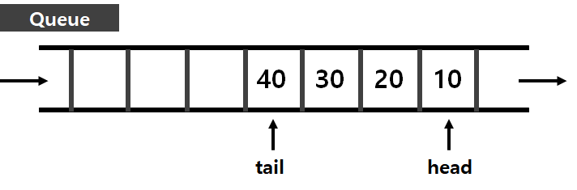
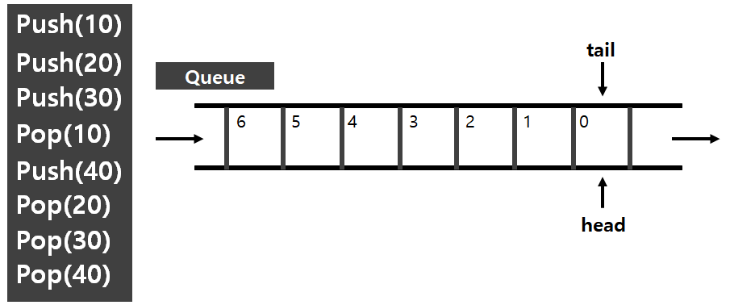
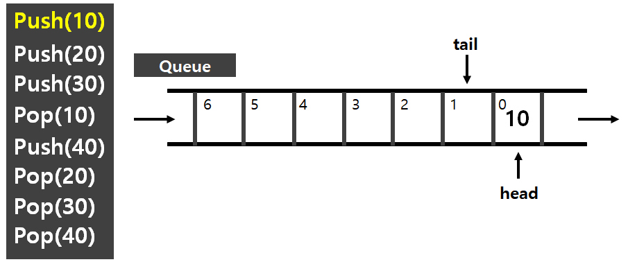
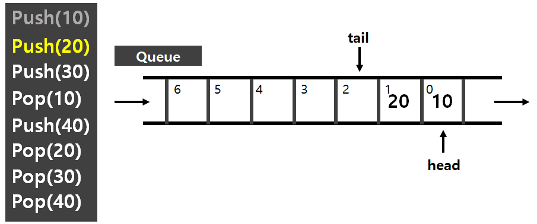
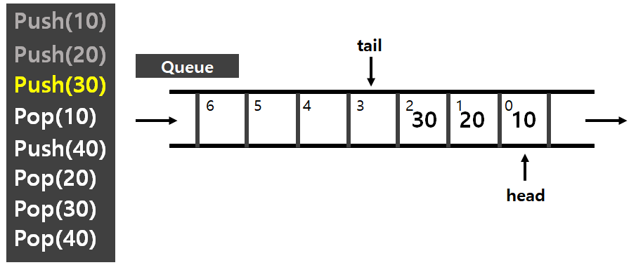
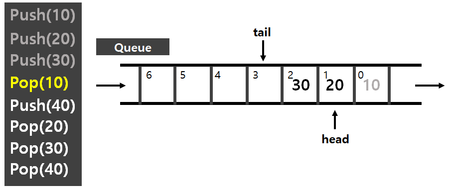
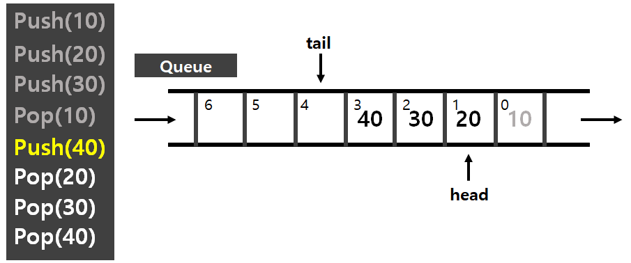
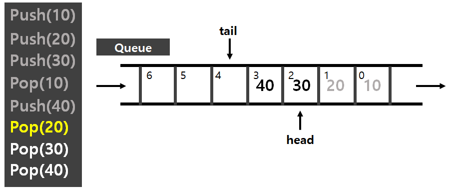
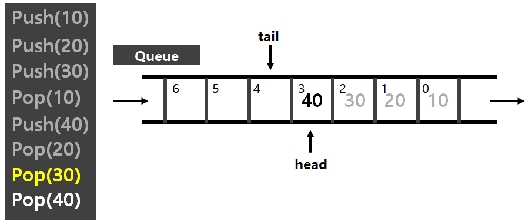
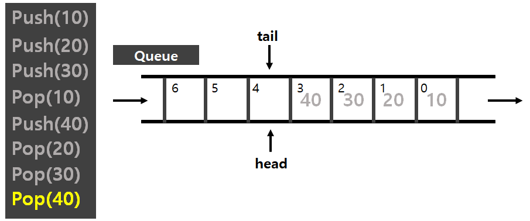

#1 Queue 정의 & 구조
#2 Queue 구현 with C/C++
* 큐 자료구조의 간략한 정의와 구조, 그리고 C언어를 이용해 구현한 내용을 정리해 보았습니다.
개인적인 공부 기록용으로 작성한 글이기에 잘못된 내용이 있을 수 있으며, 지속적으로 수정해 나갈 예정입니다.
#1 Queue 정의 & 구조
Queue란, 한쪽에서 원소를 넣고 반대쪽에서 원소를 뺄 수 있는 자료구조이다.
먼저들어간 원소가 먼저 나오는 구조이기에 FIFO(First In First Out) 라고 하며, 은행의 대기번호를 생각하면 쉽게 이해가 가능하다.원소의 추가/제거 의 시간 복잡도는 O(1)이며, 맨 앞/뒤의 원소 확인의 시간 복잡도 또한 O(1)이다.배열을 이용해 구현 하는 경우 중간의 원소들을 확인하는 것이 가능하지만, 가장 앞/뒤가 아닌 원소들을 확인하거나 변경하는것은 원칙적으로 불가능하다. (C++ STL 표준 라이브러리의 queue 또한 중간의 원소를 접근하는 기능이 없다.)큐는 BFS 알고리즘이나, 플러드필 알고리즘 등 PS에서 매우 빈번하게 사용되는 중요한 개념으로 반드시 숙지하고 넘어가야 한다.

위의 그림과 같이 가장 앞의 원소를 가리키는 head와 마지막 원소를 가리키는 tail이 존재한다.
10, 20, 30 , 40 을 추가하고 삭제하는 과정을 예시로 큐의 작동원리를 이해해 보도록 하자.
(단, pop() 함수는 실제로 파라미터[인자]가 없으며 이해하기 쉽도록 삭제할 원소를 괄호 안에 적어 두었다.)

초기 상태는 head와 tail 모두 같은 0번지를 가리킨다. [head = 0 , tail = 0]

Push(10) 명령을 실행한다. 0번지에 10이 추가되고, head 는 그대로 0번지를 tail은 1번지를 가리킨다.
[head = 0 , tail = 1]

Push(20) 명령을 실행한다. 1번지에 20이 추가되고, head는 마찬가지로 0번지를 가리키며 tail은 2번지를 가리킨다.
[head = 0 , tail = 1]

Push(30) 명령을 실행한다. head는 0번지 tail은 3번지를 가리킨다. [head = 0 , tail = 3]

Pop(10) 명령을 실행한다. 여기서 굳이 0번지의 10을 다른 값으로 덮을 필요가 없다. head를 다음 번지를 가리키게 하면 된다.
이 과정을 쭉 반복하면 되는데, Push(40) Pop(20) Pop(30) Pop(40) 은 따로 설명없이 그림으로만 나타내도록 하겠다.
   
#2 Queue 구현 With C/C++
다음으로 C를 이용해 Queue 자료구조를 구현해 보도록 하자.
구현할 큐 자료구조는 총 4가지 push(), pop(), front(), back() 함수로 구성되어 있으며 push(),pop() 은 앞에서 설명한 바와 같이 삽입, 삭제하는 함수이고 front(),back()은 각각 가장 앞의 원소와 맨 뒤의 원소를 참조하는 함수이다.
그렇게 어렵지 않으니 먼저, 한번 구현해 보고 소스 코드를 비교하며 확인해 보도록 하자!
첫 번째는 push() 함수이다. 정말 간단하게 구현 가능하다. 파라미터로 x를 받은 뒤 , 큐 배열에 저장해 주고 후위 연산자를 이용해 tail의 값을 1 증가시켜준다.
void push(int x)
{
printf("push(%d) ", x);
dat[tail++] = x;
}다음은 pop() 함수이다. 마찬가지로 엄청 쉽다. head 값을 증가시켜 주기만 하면 된다.
void pop()
{
printf("pop() ");
head++;
}세 번째는 front() 함수이다. 맨 앞의 원소는 head가 가리키고 있으니, 큐 배열로 접근해 head 번째 인덱스를 반환한다.
int front()
{
printf("front() ");
return dat[head];
}마지막으로 back 함수이다. 맨 뒤의 원소는 tail - 1 번째 이므로, 큐 배열로 접근하여 tail -1 번째 인덱스를 반환한다.
int back()
{
printf("back() ");
return dat[tail-1];
}
예외처리도 없이 정말 간략하게 구현해 보았는데 사실 직접 큐를 구현해서 사용하는 경우는 거의 없고 C++의 STL이나 각 언어에서 제공해 주는 라이브러리를 사용한다. 그래도 큐의 기본 개념과 작동원리를 알고 사용하는 것은 중요하다고 생각해서 한 번 정리해 보았다. 아래는 모든 코드이며 main부의 push , pop은 앞서 설명한 예시와 똑같이 작성하였다.
#include <stdio.h>
const int MAX = 100001; // queue 최대 원소 수
int dat[MAX]; // queue
int head = 0;
int tail = 0;
void push(int x)
{
printf("push(%d) ", x);
dat[tail++] = x;
}
void pop()
{
printf("pop() ");
head++;
}
int front()
{
printf("front() ");
return dat[head];
}
int back()
{
printf("back() ");
return dat[tail-1];
}
int main()
{
push(10);
push(20);
push(30);
pop();
push(40);
pop();
pop();
pop();
return 0;
}